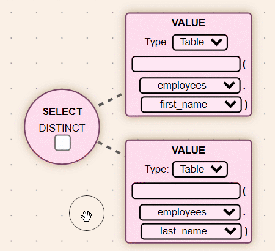

NASQL Help. Click anywhere to close.
- About NASQL
- NASQL, or Node-Activated Structured Query Language, is a graphical editor that uses an interactive node graph to create SQL selection queries.
- This program is provided "as is" with absolutely no warranty. The developers will not be liable nor responsible for any damages as a result of using this program or the output of this program.
- NASQL can be used to generate code. As such, the code you generate is solely your own, and your responsibility. Avoid including anything offensive or illegal in your code or node graph.
- Web App Structure
- The web app is split into three areas: the node editor, the code preview and test area.
- Use the gray panel splits to change the size of these areas.
- If you are viewing this page online, the test area will not be used to connect to the database.
- Every graph in NASQL uses six 'fixed' nodes. These are circular and cannot be deleted.
- Changing a node on the graph will change the code preview.
- Note that the JOIN, GROUP, HAVING and ORDER nodes must be enabled or their options changed to something other than 'None' to affect the output.
- SQL Node Controls
- Clicking on a node selects the node and all its children.
- If there is already a selection, clicking will select a single node.
- Clicking on the background clears the selection. 
- Double clicking or tapping on a node adds a child node.
- Right-clicking, or a tap and hold on a touchscreen, deletes a node.
- Dragging on the background pans the view, and scrolling or pinching zooms in or out.
- Nodes can only be deleted if they have no children.
- Selected nodes can be dragged, and a group of selected nodes will be dragged as one.
- The buttons to the top-right of the screen provide the following functions:
- Zoom In
- Zoom Out
- Center view onto nodes
- "Lock" the nodes, stopping drag functionality.
- "SAVE" the node layout to a file.
- "LOAD" the node layout from a file.
- Dragging on the minimap lets you pan the view quickly.
- Node Types
- SELECT : Provides the option to choose the data from the database to be displayed.
- The FROM section is handled automatically, based on the tables used in SELECT/WHERE.
- JOIN : Allows the use of primary keys to form links between multiple tables.
- WHERE : Provides a filter for data returned by specifying conditions.
- GROUP : Equivalent to GROUP BY, this provides attributes to group the data returned.
- HAVING : Allows the filtering of groups of data using an aggregate.
- ORDER : Equivalent to ORDER BY, this provides the columns to set the order of the results
- VALUE : Create constant data or reference tables or form inputs
- BOOLEAN : Child of WHERE nodes. Provides a choice of outcome for two or more logic nodes.
- LOGIC : Child of BOOLEAN nodes. Allows for the comparison of numbers, attributes and text strings.
- JOIN ON : Child of the JOIN node. Specifies the condition and join type of two tables.
![]()